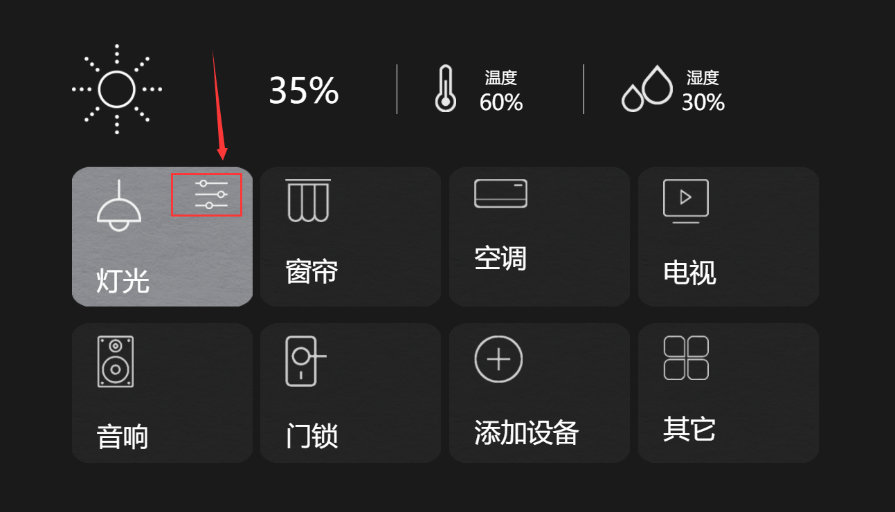

# 绑定事件，根据下标判断当前的元素
用一个 li 渲染八个 list 小 div，当鼠标放上去的时候，给他们绑定两个事件，一个移入事件，一个移除事件。首先，用 css 的 hover 属性给每一个 div 添加一个背景图片，鼠标放上去的时候背景为灰色。移开就恢复黑色。
效果图如下：

代码如下：
<template> <section> <div class="card"> <ul> <li v-for="(item,index) of list" @mouseover="yiru(index)" @mouseleave="yichu(index)" :key="item.id" class="list"> <img :src="item.imgsrc" alt=""> <span>{{ item.text }}</span> <div v-if="item.isactive" class="setup"><img src="../../assets/smarthome_index/控制面板图标.png" alt=""></div> </li> </ul> </div> </section> </template><script>
export default{
data() {
return{
list:[
{id:'1', imgsrc: require('../../assets/smarthome_index/线性吊灯图标.png'), text: '灯光', isactive: false },
{id:'2', imgsrc: require('../../assets/smarthome_index/窗帘图标.png'), text: '窗帘', isactive: false },
{id:'3', imgsrc: require('../../assets/smarthome_index/空调图标.png'), text: '空调', isactive: false },
{id:'4', imgsrc: require('../../assets/smarthome_index/电视机图标.png'), text: '电视', isactive: false },
{id:'5', imgsrc: require('../../assets/smarthome_index/音响图标.png'), text: '音响', isactive: false },
{id:'6', imgsrc: require('../../assets/smarthome_index/门锁图标.png'), text: '门锁', isactive: false },
{id:'7', imgsrc: require('../../assets/smarthome_index/添加设备图标.png'), text: '添加设备', isactive: false },
{id:'8', imgsrc: require('../../assets/smarthome_index/其它图标.png'), text: '其它', isactive: false }
]}},
methods:{
yichu(index){
this.list[index].isactive = false
},
yiru(index){
this.list[index].isactive = true
console.log(index);
}}}</script>
<style scoped>.card{width: 1200px;
/* border: 1px solid red; */margin: auto;
overflow: hidden;
display: flex;
align-items: center;
position: relative;
margin-bottom: 200px;
}.list{
box-sizing: border-box;
color: #FFFFFF;
list-style: none;
width: 290px;
height: 224px;
float: left;
margin-right: 13.33333px;
background-image: url(../../assets/smarthome_index/没选中背景块.png);
padding-top: 20px;
padding-left: 40px;
font-size: 42px;
position: relative;
}.list img{
display: block;
margin-bottom: 49px;
}.setup{
position: absolute;
top: 20px;
right: 40px;
}.list:hover{
background-image: url(../../assets/smarthome_index/选中背景块.png);
}.list:nth-child(4){
margin-right: 0px;
margin-bottom: 27px;
}.list:nth-child(8){
margin-right: 0px;
}</style>
鼠标放上去的时候，显示当前 div 右上角的设置标志。移开则恢复没有选中状态。
# 组件间的传值
父传子
在子组件中创建一个
props，里面自定义一个名字，冒号后面跟的是从父组件传过来的 type 类型。共有String字符串Number数字Boolean布尔Array数组Object对象Date日期Function函数Symbol独一无二的值 (es6 语法)，首字母大写。
imgsrc: String}}在父组件中，在需要传值的组件上绑定需要的值。
:imgsrc是子组件需要接收的名字，后面的imgsrc是 data 中定义的数据的名字，就是把 data 中的值传递给子组件。
/* 主要就是把这个值，传给子组件 */}SmNav,SmKongzhi,SmCard,}}}总结一下：
- 子组件在
props中创建一个属性，用以接收父组件传过来的值- 父组件中注册子组件
- 在子组件标签中添加子组件 props 中创建的属性
- 把
data中需要传给子组件的值赋给该属性
子传父
在子组件中创建一个点击事件，在响应该点击事件的函数中使用
$emit来触发一个自定义事件，并传递一个参数。
}}例如上面代码：
$emit("dianji",list.imgsrc)$emit（）中，第一个参数自定义事件的名字，第二个参数是你需要传到父组件的值。这个值可以是字符串，数据类型，数组类型等。在父组件中，
是以一个事件的形势接收因为传过来的是一个自定义事件。
例如上面代码，
dianji是子组件传过来的。你可以自定义一个方法名在父组件中使用该方法名。这时，你自定义的方法里面就可以控制父组件里面的数据，也可以操作父组件的data数据再传弟给其他子组件。
相邻组件间的传值目前我使用的是，先把他们都传给父组件，再又父组件又传给其他子组件。所有就转换成了，子传父、父传子的问题了。
其他方法等待更新。。。
# vue 自动生成二维码
安装
导入 vue 项目中使用
}}}}注：上方代码中的 logoSrc 对应的图片 url 地址 我加上了？cache 是为了解决资源请求的跨域问题。具体情况展现可自行研究。
属性 介绍 size 二维码宽高大小，因为是正方形，所以设一个参数即可 margin 默认边距 20px，不喜欢的话自己设为 0 colorDark 实点的颜色，注意要和 colorLight 一起设置才有效 colorLight 空白的颜色，注意要和 colorDark 一起设置才有效 bgSrc 嵌入背景图地址，没什么卵用，不建议设置 logoSrc 二维码中间的图，这个是好东西，设置一下显得专业点 logoScale 中间图的尺寸，不要设太大，太大会导致扫码失败的 dotScale 那些小点点的大小，这个也没什么好纠结的，不建议设置了 总结：主要是运用组件自动生成，二维码里面的类容就是 text 中的类容。
# Vue + Element ui 导出 Excel 表格
// 导出 excel 表格，传入两个参数，一个是导出时候的表名，一个是表格的 id | |
export function exportExcel(tabname,id) { | |
//.table 捕获 excel 的表格 | |
console.log(tabname); | |
// 获取表格的 id | |
let wb = XLSX.utils.table_to_book(document.getElementById(id)); | |
// 这里的 id 是调用的方法传过来的 | |
let wbout = XLSX.write(wb, { | |
bookType: "xlsx", | |
bookSST: true, | |
type: "array" | |
}); | |
// 导出的时候，表格显示的名字。这里也是调用的方法传过来的 | |
let name = tabname | |
try { | |
FileSaver.saveAs( | |
new Blob([wbout], { type: "application/octet-stream" }), | |
name + ".xlsx" | |
); | |
} catch (e) { | |
if (typeof console !== "undefined") console.log(e, wbout); | |
} | |
return wbout; | |
} |
因为多地方需要用到导出表格，所以把他封装成一个方法，使用 export 抛出。到时候再需要的页面直接引用就可以了。如下：
// 引用路径 | |
import {exportExcel} from '@/patch/api' | |
methods: { | |
daochuChangs(){ | |
const name = "模块采购" | |
// 传入需要导出的表名，和表格的 id，此处的 id 绑定在 data 中。所以用了 this。 | |
exportExcel(name,this.tableid) | |
} | |
}, |